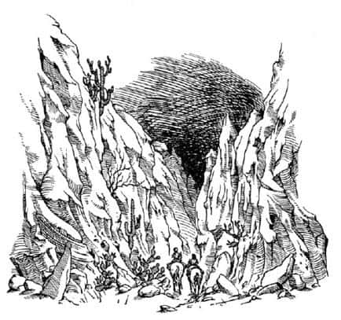
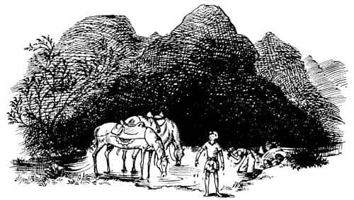

Çölün Öte Yanı
“Ne kötü! Ne kadar kötü!” diye sızlandı Lasaraleen. “Oh, tatlım o kadar korktum ki. Her yanım titriyor. Bak.”
“Hadi” dedi, Aravis de titreyerek. “Yeni saraya geri döndüler. Bu odadan çıktık mı, yeterince emniyette olacağız. Fakat çok fazla zaman kaybetmemize neden oldu. Beni o su kapısına mümkün olduğunca çabuk götür.”
“Tatlım, nasıl yaparız bunu?” dedi ince bir sesle Lasaraleen. “Ben hiçbir şey yapamam – şimdi olmaz. Zavallı sinirlerim! Hayır, birazcık sakince uzanalım ve sonra da geri dönelim.”
“Neden geri dönecekmişiz ki?” diye sordu Aravis.
“Oh, anlamıyorsun. Halden hiç anlamıyorsun” dedi Lasaraleen, ağlamaya başlayarak. Aravis, acımanın zamanı olmadığına karar verdi.
“Bana bak!” dedi, Lasaraleen’i yakalayıp sarsarak. “Geri dönme hakkında bir sözcük daha edersen ve hemen beni şu su kapısına götürmezsen, ne yapacağım biliyor musun? Şu koridora fırlayıp çığlık atacağım. O zaman ikimiz de yakalanırız.”
“Fakat ikimizi de ö-ö-öldürürler!” dedi Lasaraleen. “Tisroc’un (ömrü uzun olsun) ne dediğini duymadın mı?”
“Evet. Ahoshta ile evlenmektense ölürüm daha iyi. Onun için, hadi.”
“Of, hiç de nazik değilsin” dedi Lasaraleen, “hele ben şu durumdayken!”
Neyse ki Lasaraleen sonunda razı oldu. Daha önce geçtikleri merdivenlerden aşağı indiler, sonra başka bir koridoru geçtiler ve nihayet açık havaya çıktılar. Şimdi teraslar halinde aşağıya, şehir duvarlarına kadar uzanan sarayın bahçesindeydiler. Ay pırıl pırıl parlıyordu. Maceralardaki engellerden biri de, en güzel yerlere geldiğinizde, oranın tadına varamamanızdır; genellikle acele etmeniz gerekir ve endişe içindesinizdir. Öyle ki Aravis (yıllar sonra hatırlamasına karşın), sadece gri bahçelerin, sessizlikte fıkırdayan havuzların ve selvi ağaçlarının uzun, kara gölgelerinin silik izlenimlerini hatırlayacaktı.
Yamacın dibine eriştiklerinde ve duvarlar, başlarının üzerinde asık yüzleriyle yükseldiğinde Lasaraleen öylesine titriyordu ki, kapının kolunu çeviremedi. Aravis açtı kapıyı. Sonunda oradaydı; yansıyan ayışığıyla parlayan nehirde… Küçük iskele ve birkaç gezi sandalını gördü.
“Hoşça kal” dedi Aravis, “teşekkür ederim. Domuzluk yaptıysam özür dilerim. Fakat neden kaçtığımı bir düşün.”
“Oh, Aravis tatlım” dedi Lasaraleen. “Aklın başına gelmedi mi senin? Özellikle Ahoshta’nın ne kadar büyük bir adam olduğunu gördükten sonra.”
“Büyük adam!” dedi Aravis. “Tekmelendiğinde yaltaklanan, ama o korkunç Tisroc’u oğlunun ölümünü planlamaya cesaretlendirerek intikam almayı umut eden, iğrenç, aşağılık bir köle. Öf be! Onun gibi bir yaratıkla evlenmektense, babamın bulaşıkçısıyla evlenirim daha iyi.”
“Oh, Aravis, Aravis, böyle korkunç şeyleri nasıl söyleyebiliyorsun; üstelik Tisroc (ömrü uzun olsun) hakkında da… O ne yaparsa doğrudur!”
“Hoşça kal” dedi Aravis, “Giysilerin çok güzeldi. Evinin de güzel olduğunu söyleyebilirim. Bana göre olmamasına karşın, güzel bir yaşamın olacağına eminim. Arkamdan kapıyı yavaşça kapat.”
Kendini sevgiyle kucaklayan arkadaşının kollarından sıyrıldı, bir kayığa atladı, demir aldı. Biraz sonra nehrin ortasında, tepesinde kocaman bir ay ve nehrin derinliklerinde yansıyan kocaman başka bir ay ile baş başaydı. Hava temiz ve serindi. Öte yakaya yaklaştığında bir baykuşun ötüşünü duydu. “Ah! Böylesi daha iyi!” diye düşündü Aravis. Hep kırsal yerlerde yaşamıştı ve Tashbaan’da geçirdiği her dakikadan nefret etmişti.
Karaya çıktığında kendini karanlıklar içinde buldu, çünkü ağaçlar ve yükselen yamaç, ayışığını kesiyordu. Yine de Shasta’nın keşfettiği aynı yolu bulmayı becerdi. Tıpkı onun gibi, çimenliğin sona erip, kumların başladığı yere geldi. Sol tarafa baktı; (onun gibi) büyük, kapkara mezarları gördü. İşte o zaman, gözüpek bir kız olmasına karşın cesaretini yitirdi. Diyelim ki diğerleri orada değil! Ve diyelim ki cinler var orada! Yine de başını (dili dışarıda) ileri uzattı ve mezarlara doğru yürüdü. Ancak mezarlara varmadan Bree’yi, Hwin’i ve uşağı gördü.
Aravis, “Sen sahibene geri dönebilirsin artık” dedi uşağa (ertesi sabah şehir kapıları açılana kadar dönemeyeceğini tamamen unutarak). “Zahmetlerin için şu parayı al.”
“Duymak, itaat etmektir” dedi uşak ve hemen kaçar gibi bir hızla şehre doğru yola çıktı. Acele etmesini söylemeye gerek yoktu. O da epeydir cinleri düşünmekteydi.
Ondan sonraki birkaç saniye Aravis, sanki sıradan atlarmış gibi, Bree ve Hwin’in burunlarını öpüp boyunlarını okşamakla meşgul oldu.
“Ve işte Shasta da geliyor! Aslan’ın sayesinde!” dedi Bree. Aravis arkasına baktı, gerçekten de oydu; Shasta, uşağın gittiğini gördüğü an saklandığı yerden çıkmıştı.
“Şimdi” dedi Aravis. “Hiç zamanımız yok!” Ve aceleyle, Rabadash’ın çıkacağı seferi onlara anlattı.
“Hain köpekler!” dedi Bree, yelesini sallayıp ayaklarını yere vurarak. “Barış zamanında haber vermeden saldırmak! Ama biz onun tekerine çomak sokacağız. Ondan önce orada olacağız.”
“Olabilir miyiz?”dedi Aravis kendini Hwin’in sırtına çekerek. Shasta ata hep böyle binebilmeyi istiyordu.
“Broo-hoo” diye homurdandı Bree. “Atla bakalım Shasta. Başlayalım mı? Onlardan önce çıkıyoruz!”
“O, hemen yola çıkacağını söylüyordu” dedi Aravis.
“İnsanlar böyle konuşur” dedi Bree. “Fakat iki yüz at ve atlının sularını, yiyeceklerini, silahlarını tedarik edip eyerleyerek, bir dakikada yola çıkamazsın. Şimdi ne tarafa gidiyoruz? Kuzeye mi?”
“Hayır” dedi Shasta “Ben biliyorum. Bir çizgi çizmiştim. Sonra açıklarım. Siz atlar, ikiniz de biraz sola doğru gidin. Ah – işte çizgi.”
“Şimdi, hikâyelerde anlatıldığı gibi, bütün gündüz ve gece dörtnala gitmek gerçekte mümkün değildir. Biraz yürüyüp, biraz tırıs gitmeliyiz, ama tırıslar canlı ve yürüyüşler kısa olmalı. Biz yürürken siz insanlar da inip yürümelisiniz. Şimdi. Hazır mısın Hwin? Hadi gidelim. Narnia ve kuzeye!”
Başlangıçta her şey çok güzeldi. Gece saatler önce başladığı için kumlar, gündüz boyunca aldıkları güneş ısısını yansıtmıyorlardı. Hava serin, temiz ve berraktı. Ayışığı altında kumlar, gözlerinin görebildiği her yönde düzgün bir su yüzeyi ya da gümüş bir tepsi gibi parlıyordu. Bree ve Hwin’in nal sesleri dışında hiçbir ses duyulmuyordu. Shasta, arada bir inip yürümek zorunda olmasa, neredeyse uyuyakalacaktı.
Bu durum sanki hiç bitmeyecekmiş gibi geldi onlara. Sonra bir an geldi, ay kayboldu. Kör karanlıkta yol alırken zamanın geçmediğini düşündüler. Ve sonra öyle bir an geldi ki Shasta, Bree’nin boynunu ve başını öncekinden daha belirgin görebildiğini hissetti. Ve yavaş yavaş, ama çok yavaş, her taraftaki sonsuz gri düzlüğü fark etmeye başladı. Hiç hayat belirtisi yoktu, sanki ölüler dünyasındaydı. Ve Shasta müthiş yorgun olduğunu, üşüdüğünü, dudaklarının kurumuş olduğunu hissetti. Sürekli, deri takımların biteviye gıcırtısını, öteberinin şıngırtısını, atların nal seslerini – düzgün bir yolda olduğu gibi dıgıdık-dıgıdık değil de, kuru kumlarda bubudug-bubudug diye çıkan sesleri – dinlemişti.
Saatlerce yol aldıktan sonra nihayet sağ yanda, uzakta, ufuk çizgisinin altında uçuk gri renkte bir çizgi, ardından da kırmızı bir çizgi belirdi. Sonunda sabah olmuştu, ama bir tek kuş bile ötmeden… Şimdi arada bir yürümekten memnundu, çünkü çok fena üşüyordu.
Sonra aniden güneş doğdu ve her şey bir anda değişti. Gri kumlar sarıya döndü ve sanki elmas parçaları serpiştirilmiş gibi parıldadı. Sol yanlarında Shasta, Bree, Hwin ve Aravis’in upuzun gölgeleri kendileriyle yarışıyordu. Pire Dağı’nın ikiz tepeleri uzakta, gün ışığında parıldadı ve Shasta yollarından biraz sapmış olduklarını anladı. “Biraz sola, biraz sola” diye cıvıldadı. En güzeli de geriye baktığında, uzaklarda kalan Tashbaan’ın küçücük görüntüsüydü. Mezarlar görünmez olmuşlardı. Tisroc’un şehri, o çentikli silueti olan tek yükselti tarafından yutulmuştu. Şimdi herkes kendini daha iyi hissediyordu.
Fakat bu uzun sürmedi. İlk gördüklerinde Tashbaan çok uzakta gibiydi. Oysa şimdi, onlar uzaklaştıkça sanki o uzaklaşmak istemiyordu. Shasta geriye bakmaktan vazgeçmişti. Çünkü bu, ona sadece hiç hareket etmedikleri hissini veriyordu. Sonra ışık sorun olmaya başladı. Kumların parıltısı gözlerini alıyordu, ama Shasta gözlerini kapamaması gerektiğini biliyordu. Gözlerini kısıp ileriye, Pire Dağı’na bakmaya devam etmeli, gidecekleri yönü söylemeliydi. Sonra sıcak bastırdı. Attan inip yürümesi gerektiği ilk anda fark etti bunu. Yere inerken kumlardan yükselen sıcaklık, sanki bir fırının kapağı açılmış gibi yüzüne çarptı. Bir sonraki kez daha da kötüydü. Fakat üçüncü kez, çıplak ayağı kuma dokununca acıyla bağırdı ve göz açıp kapayıncaya kadar bir ayağını üzengiye, öbürünü de Bree’nin sırtına attı.
“Kusura bakma Bree” diye soludu. “Yürüyemeyeceğim. Ayaklarımı yakıyor.”
“Elbette!” dedi nefes nefese Bree. “Bunu ben de düşünmeliydim. Hadi, bin. Yapacak bir şey yok.”
“Senin için her şey iyi” dedi Shasta, Hwin’in yanında yürümekte olan Aravis’e. “Ayakkabıların var.”
Aravis cevap vermedi; ciddi görünüyordu. Eminim öyle istemiyordu, ama ne yazık ki öyle görünüyordu.
Yeniden tırıs ve yürüyüş ve yine tırıs… Şıngır-şıngır-şıngır, gacır-gıcır-gacır, atların ter kokusu, kendi terinin kokusu, göz kamaştırıcı parlaklık ve baş ağrısı… Kilometreler boyunca değişen hiçbir şey yoktu. Tashbaan hiçbir zaman uzak, dağlar hiçbir zaman yakın görünmeyeceklerdi. Bunun hep böyle süreceğini hissediyordu – şıngır-şıngır-şıngır, gacır-gıcır-gacır, atların ter kokusu, kendi terinin kokusu…
Kuşkusuz herkes, vakit geçirmek amacıyla kendi kendine çeşitli oyunlar deniyordu. Ne var ki, bu hiçbir işe yaramıyordu. Susuzluklarını unutmak istiyorlardı – Tashbaan’da bir saraydaki buzlu şerbet, berrak kaynak sularının şırıltısı, kaymaklı, ancak kıvamında kaymaklı, soğuk ve tatlı süt – ve unutmak istedikçe daha çok hatırlıyorlardı.
Sonunda kumullardan yükselen, on metre boyunda, elli metre eninde bir kaya kütlesi gördüler. Gölgesi neredeyse yok gibiydi. Çünkü güneş şimdi tam tepedeydi, ama az da olsa bir gölgelik vardı. Hep birden oraya sığındılar. Bir şeyler yiyip azar azar su içtiler. Kırbayla atları sulamak kolay değildir ama Bree ve Hwin dudaklarını akıllıca kullanıyorlardı. Kimse yeteri kadar su içememişti. Hiçbirinin ağzını bıçak açmıyordu. Atlar köpürmüş, hırıltıyla nefes alıyorlardı. Çocukların beti benzi atmıştı.
Kısa bir moladan sonra yola koyuldular. Aynı sesler, aynı kokular, aynı parıltılar, gölgeleri sağ yana düşüp, uzadıkça uzayıp, dünyanın doğusunun ta sonuna erişinceye kadar devam etti. Güneş batıda ağır ağır ufka doğru yaklaştı ve nihayet battı. Kumlardan yükselen sıcaklık gündüzki kadar kötü olmasına karşın, acımasız parıltı gitmişti. Dört çift göz sabırsızlıkla, Kuzgun Sallowpad’in söz ettiği vadiye dair bir iz bulabilmek için bakıyordu. Fakat kilometrelerce ve kilometrelerce uzanan çölden başka bir şey yoktu. Şimdi artık gündüz sona ermiş, yıldızlar çıkmıştı. Atlar yıldırım hızıyla koşmayı sürdürüyorlardı. Çocuklar eyerlerin üzerinde susuzluk ve yorgunluktan perişan, bir yükselip bir alçalıyorlardı. Ay iyice yükseldikten sonra Shasta – ağzı susuzluktan kavrulan birinin garip ve hırıltılı sesiyle – bağırdı:
“İşte orada!”
Artık yanılmaları mümkün değildi. Önlerinde hafif sağa doğru bir yamaç vardı: Yokuş aşağı inen, her iki yanında kaya kütleleri olan bir yamaç. Atların yorgunluktan koşacak hali kalmamıştı, ama oraya doğru yöneldiler. Biraz sonra ulaştıkları dere yatağı, başlangıçtaki dümdüz uzanan çölden daha kötü geldi onlara. Çünkü kayalık duvarların arası nefes almayı güçleştirecek derecede boğucuydu ve ayışığı daha azdı. Biraz sonra dik bir biçimde aşağıya doğru inen yamacın her iki yanındaki kayalar, uçurum yüksekliğine ulaştılar. Sonra bitkiler görüldü – hint incirine benzeyen bitkiler ve dikenli kaba otlar. Çok geçmeden atların toynakları, kum yerine, taş ve çakılların üzerine basmaktaydı. Vadinin her dönemecinde – birçok dönemeci vardı vadinin – sabırsızlıkla su arıyordu gözleri. Artık atların güçleri tükenmişti. Hwin nefes nefese, sendeleyerek Bree’nin arkasından ağır ağır yürüyordu. Neredeyse umutları tükenmek üzereydi ki, bir çamur birikintisine geldiler; yumuşak ve taze otların arasından akan incecik suyu gördüler. Daha sonra su, önce bir dereye; dere, her iki yanında çalılıkların olduğu bir çaya; çay da bir nehire dönüştü (açıklayabileceğim bir sürü hayal kırıklığından sonra). Öyle bir an geldi ki, bir çeşit uyuklama halinde olan Shasta, Bree’nin aniden durduğunu fark etti ve düşünmeksizin attan indi. Önlerinde, geniş bir gölete akan küçük bir çağlayan vardı. Atlar hemen gölete girmiş, başları suya eğik, içiyor, içiyor, içiyorlardı. “O-o-oh” dedi Shasta ve suya atladı – su dizlerine geliyordu – ve başını çağlayanın altına soktu. Belki de yaşamının en mutlu anı buydu.

Dördü birden yaklaşık on dakika sonra sudan çıktıklarında (çocukların neredeyse her tarafları ıslaktı), çevrelerine bir göz attılar. Ay, vadinin içini aydınlatacak kadar yüksekteydi şimdi. Nehrin her iki yakasında yumuşak otlar vardı. Çalıların ve ağaçların örttüğü yamaç, uçurumun dibine kadar yükselmekteydi. Çiçek açmış bitkiler, ağaçların altındaki o gölgelik çalılıklarda gizlenmiş olmalıydı, çünkü tüm açıklık alana hafif ve çok güzel kokular yayılıyordu. O an ağaçların arasındaki en karanlık boşluktan, Shasta’nın daha önce hiç duymadığı bir ses geldi – bir bülbül.
Herkes konuşamayacak ve yemek yiyemeyecek kadar yorgundu. Atlar eyerlerinin çıkarılmasını beklemeden hemen yattılar. Shasta ve Aravis de aynısını yaptı.
Daha on dakika geçmeden Hwin onları uyardı: “Uyumamamız gerekiyor. O Rabadash denen adamdan önde olmalıyız.”
“Evet” dedi Bree yavaşça. “Uyumamalıyız. Sadece biraz dinlenelim.”
Shasta (bir an için), kalkıp bir şeyler yapmazsa herkesin uyuyakalacağını biliyordu. Evet, mutlaka bir şeyler yapmalıydı. Aslında kalkıp, onları yola çıkmaya ikna etmeye karar vermişti fakat biraz sonra; henüz değil, henüz değil…
Parlayan ayışığında, bülbül, iki ata ve çocuklara şarkılar söylerken az sonra hepsi uyuyakaldı.
İlk önce Aravis uyandı. Güneş çoktan yükselmişti ve serin sabah saatlerini geride bırakmışlardı. “Hata bende” dedi kendine kızarak; fırlayıp diğerlerini uyandırmaya başladı. “Böylesine zor bir günün ardından, atların uyumaması beklenemez; konuşan hayvanlar olsa bile… ve kuşkusuz bu çocuk uyumadan duramazdı; yeteri kadar eğitilmemiş. Ama benim bilmem gerekirdi.”
Diğerleri uyku mahmurluğuyla şaşkın ve aptal bir haldeydiler.
“Hey-ho-broo-hoo” dedi Bree. “Eyerimle uyumuşum ha? Bir daha asla bunu yapmam. Çok rahatsız—”
“Oh, hadi hadi” dedi Aravis. “Neredeyse öğle oluyor. Kaybedeceğimiz bir an bile yok.”
“Bari bir tutam ot yiyelim” dedi Bree.
“Korkarım bekleyemeyiz” dedi Aravis.
“Bu kadar acele etmek niye?” dedi Bree. “Çölü geçtik, öyle değil mi?”
“Ama Archenland’a gelmedik daha” dedi Aravis. “Ve oraya Rabadash’tan önce ulaşmamız gerek.”
“Ohoo, biz onun kilometrelerce ilerisinde olmalıyız” dedi Bree. “Daha kısa bir yoldan gelmedik mi? Senin o kuzgun arkadaşın, bunun daha kestirme bir yol olduğunu söylemedi mi, Shasta?”
“Daha kısa diye bir şey demedi” diye cevapladı Shasta, “sadece daha iyi dedi, çünkü bu yönde nehir var. Eğer vaha Tashbaan’ın tam kuzeyindeyse, korkarım bu yol daha uzun olabilir.”

“Ben iki lokma bir şey yemeden devam edemem!” dedi Bree, “Dizginlerimi çıkar Shasta.”
“Lü-lütfen” dedi Hwin utangaçça. “Ben de aynı Bree gibi, devam edemeyeceğimi hissediyorum. Fakat sırtlarında insanlar varsa (mahmuzları ve diğer ağırlıklarıyla), atlar böyle hissetseler bile yürümek zorundadırlar. O zaman yola devam edebildiklerini görürler. Demek istediğim, Narnia’nın özgürlüğü için elimizden gelen her şeyi yapmamız gerekmiyor mu?”
“Sanırım Madam” dedi Bree küçümser bir şekilde, “ben zorunlu yürüyüşleri, seferleri ve bir atın nelere dayanıp dayanamayacağını senden daha iyi bilirim.”
Kolayca susturulabilen, ürkek ve nazik bir at olarak yetiştirilen (en soylu atlar gibi) Hwin’in buna verecek cevabı yoktu. Aslında Hwin haklıydı; eğer Bree’nin sırtında onu hareket etmeye zorlayan bir Tarkaan olsaydı, saatlerce zorlu bir yürüyüş yapabileceğini öğrenirdi. Fakat köle olmanın ve bir şeyler yapmaya zorlanmanın en kötü sonuçlarından biri de, artık seni zorlayan kimse olmayınca, neredeyse kendi kendini zorlama gücünü de kaybettiğini öğrenmendir.
Böylece Bree iki lokma bir şey yiyip su içene kadar beklemek zorunda kaldılar. Bu arada kuşkusuz Hwin ve çocuklar da bir şeyler yiyip içtiler. Yeniden yola çıkmadan önce saat sabahın on birine gelmiş olmalıydı. Öyle olduğu halde bile Bree, düne göre daha yavaştı. İki at arasında daha zayıf ve yorgun olanı Hwin olmasına karşın, yürüyüş süratini belirleyen oydu.
Kahverengi soğuk nehri, yeşillikleri, yosunları, yaban çiçekleri ve orman gülleriyle vadi o kadar hoş bir yerdi ki, insanda elinde olmadan yürüme isteği uyandırıyordu.